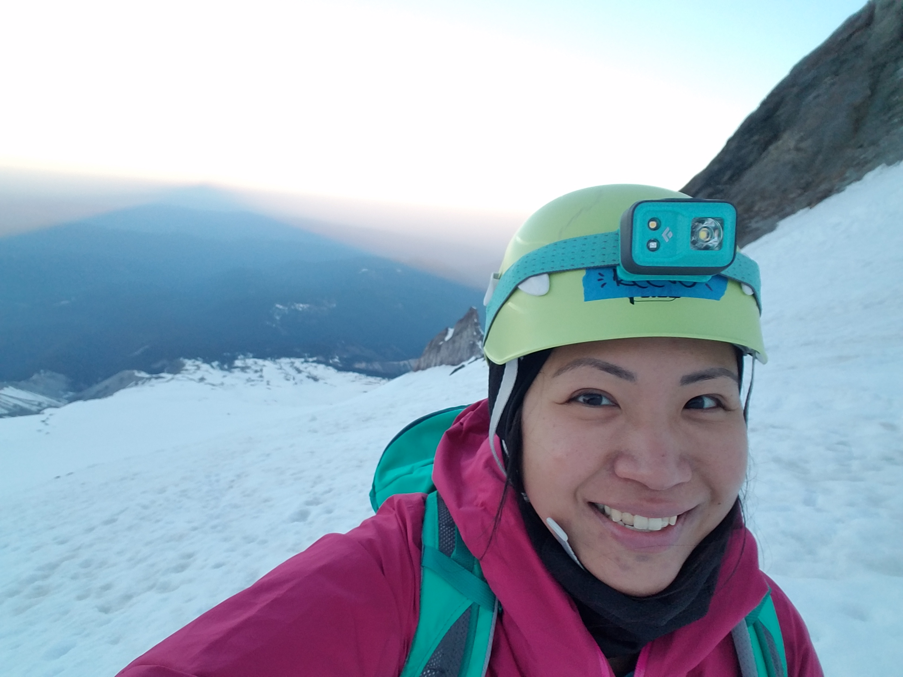

First Generation Immigrant, Hiker, Business Owner, and Now: Coding Student

Who is Reese?
A Whirlwind "About Me" Primer
Reese is someone who enjoys talking in the third person about herself, but as this can be a little awkward, I will now switch to first person.
I am originally from Malaysia, a lush, tropical country near the equator. I have lived in Oregon for almost half my life now, and have never been as pale as I am now.
I reside in SW Portland with my boyfriend, Dominic Montelongo (who is also a student in this class!), and our three pets: Egg, Cocoa, and Kong.
Background
I have a Bachelor's degree in Magazine Journalism and a professional background in retail management, and currently own two creative small businesses. I have been self-employed for the last six years as an artist making jewelry and chubby animal illustrations, and I plan on continuing them as side hustles during my coding career.
While I love my small businesses and do enjoy the artist life, I wanted something with more stability. By chance, a friend of mine stopped by my booth at the Portland Saturday Market. I remember she had gotten into software development, and asked her about it.
After seeing her enthusiasm, I researched coding careers and Epicodus, which is where she graduated from last year. Two days later, I signed up for the same bootcamp, and here I am creating this page to tell you this high-rollicking tale of forgotten toads and magical swans.
Github Projects
-
Vacation Site
This simple yet powerful page is about one of my dream vacation countries, Turkey. I created this along with my partner Darrion Gering using HTML, CSS, and Bootstrap. Word remains out on the jury as to whether turkey is, indeed, available in Turkey.
-
Wikipedia Rebuild
This is my first attempt at recreating another web page. One might call me a regular Steve Jobs. My partner Darrion Gering and I built this exact replica of the world-renowned Wikipedia page utilizing our expert knowledge of HTML, CSS, and Bootstrap. (Ok, I may be exaggerating slightly, but I am very pleased with the tabs we created.)
-
Lady Coders Blog
In a small effort to increase diversity in the tech world, my partner Heather Zurek and I made a blog about our journey as coding students. So far, we are still in Week 1, but we are determined to make it! We made this using HTML and CSS.
-
Heather & Reese's Animal Shelter
This site showcases some of the finest animals available in the adoption world today, housed at the shelter my partner Heather Zurek and I built. We used HTML and CSS to create this heartwarming site.
-
Cupcake Shop
Here we have some gourmet cupcakes for sale (but not really, please do not place an order at this time). My partner Heather Zurek and I created this page using HTML and CSS to build excitement about our entry into the cutthroat cupcake world.
What Else Do I Get Up To?
Although coding school is taking up a majority chunk of my time at the moment, here are some other things I love doing:
- Reading nonfiction
- Watching movies in the theater
- Spending time with our pets
- Eating delicious food
- Taking care of my plant babies
- Hiking, trail running, looking up mountains